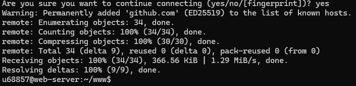
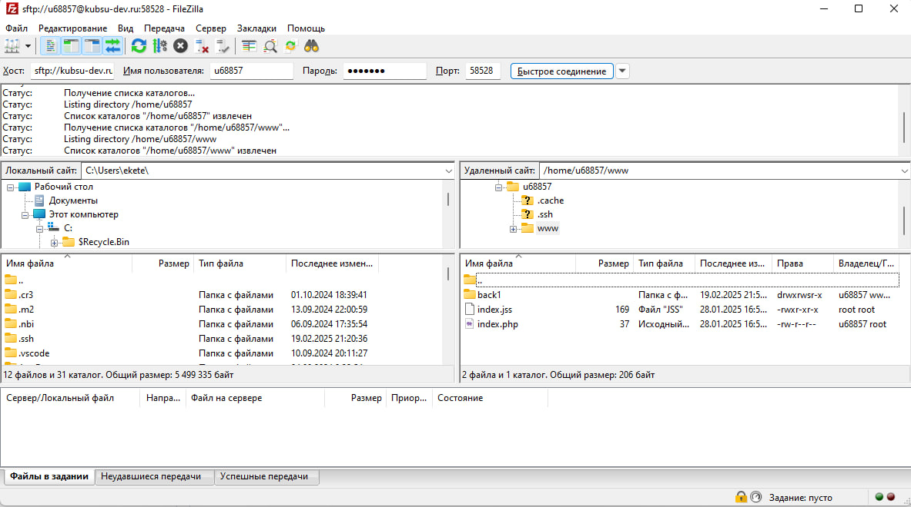
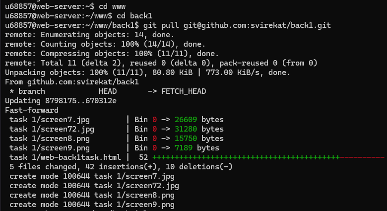

Команда ping используется для проверки доступности и времени отклика сетевого устройства.
С помощью команды ping на учебном сервере узнаем IP-адрес веб-сервера
kubsu.ru (185.13.84.92):

С помощью команды nslookup узнаем A-записи и MX-записи домена kubsu.ru и
kubsu-dev.ru.
nslookup (Name Server Lookup) используется для запроса DNS-серверов для получения информации о доменных именах или IP-адресах.
А-запись (Address record) связывает доменное имя с IP-адресом.
MX-запись (Mail Exchange record) определяет,
какие почтовые серверы отвечают за прием электронной почты для определенного доменного имени.
Здесь видно, что для kubsu.ru в MX-записи имеется 3 почтовых сервера с приоритетами 50, 10 и 20. В А-записи хранится имя и адрес.

С помощью команды whois узнаем дату регистрации домена kubsu.ru и kubsu-dev.ru.
whois позволяет узнать,
кто является владельцем домена или IP-адреса, контактную информацию владельца,
даты регистрации и истечения срока действия, а также информацию о DNS-серверах, используемых доменом.

Дата регистрации kubsu.ru: 28.03.1998

Дата регистрации kubsu-dev.ru: 12.02.2020
С помощью команды cd www перейдём в каталог www и склонируем туда репозиторий с нашей веб-страницей. Команда cd (Change Directory) - это команда командной строки, используемая для смены текущего рабочего каталога (папки) в файловой системе.

С помощью программы FileZilla соединимся с учебным сервером по протоколу SFTP и скопируем на локальный компьютер файлы задания из каталога www:
После изменений кода страницы на github и добавления новых скриншотов в репозиторий необходимо загрузить эти изменения на учебный сервер. Для этого с помощью cd перейдём в директорий back1 (так называется репозиторий) и выполним git pull.
С помощью команды ls проверим, что находится в back1. Там, кроме файла README.md, всего одна папка task 1.